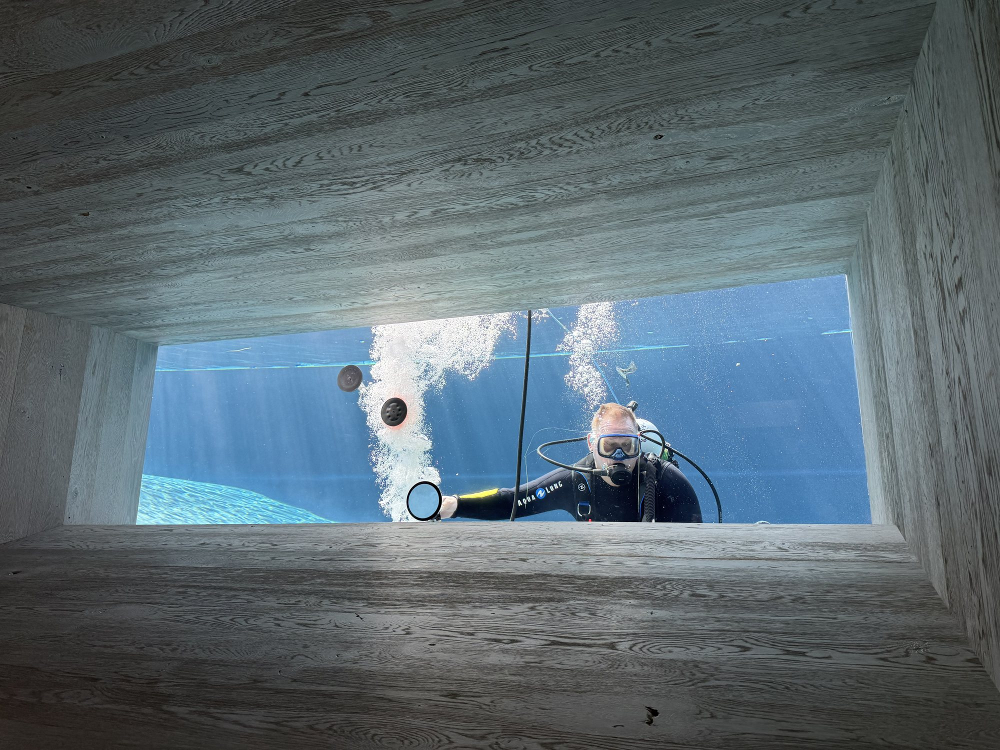

Engineered for the Extraordinary
Structural acrylic for luxury pools, aquariums, zoos, and architectural builds. Full scope, US-fabricated, founder-led.
- {{s.h}}
- {{s.sub}}
We engineer experiences people walk through, swim beside and see the world through.

Founder-Led by Bart Baker
3 Decades of Structural Acrylic
100% US-Fabricated in Houston, TX
Structural Acrylic Systems provides end-to-end engineering, fabrication and installation of structural acrylic for luxury pools, commercial projects, public aquariums and one-of-a-kind architectural spaces. Founder-led by Bart Baker, with 30+ years of structural acrylic mastery and direct oversight on every build.
Luxury Residential Pool
One build, four stages. Hover or tap a stage to open it.
A Process Built on 30 Years of Acrylic


Industries We Serve

Ready to Discuss Your Project?
Talk directly with Bart, from a single pool panel to a full aquarium build.
Discuss Your Project Or call Bart directly: [(XXX) XXX-XXXX]